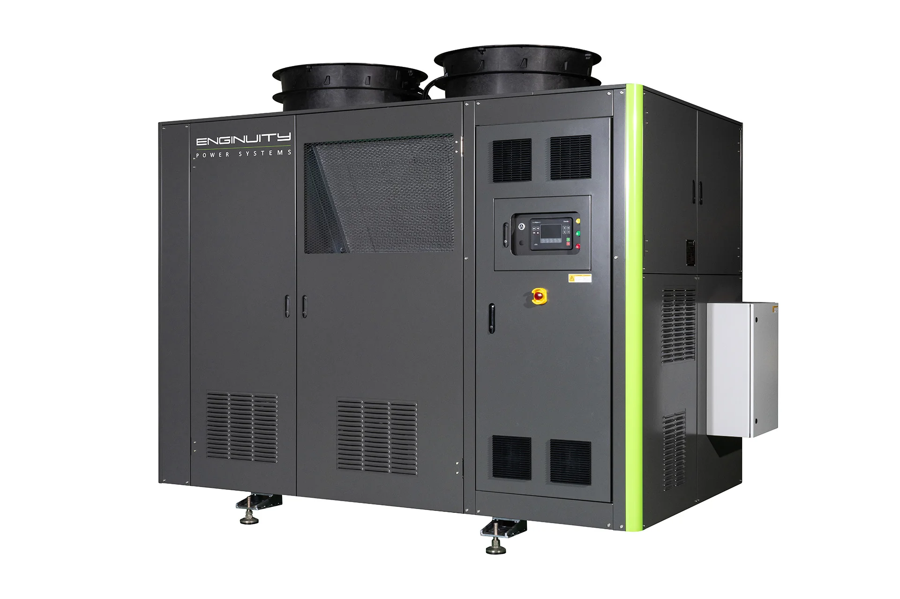
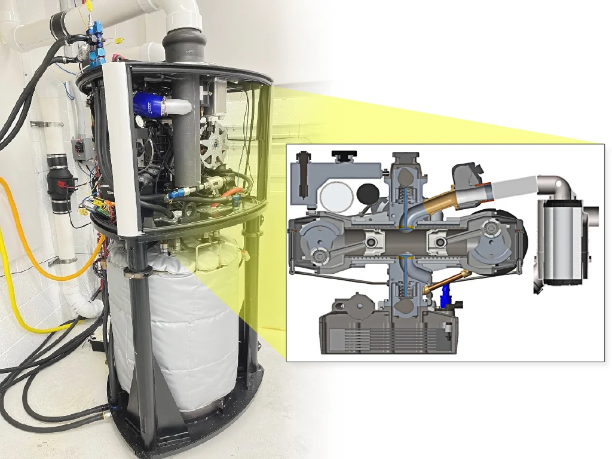
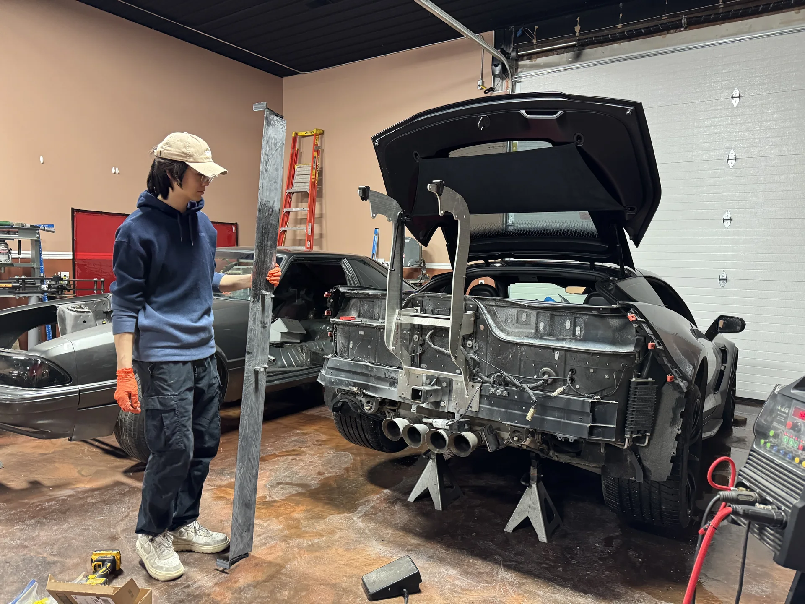
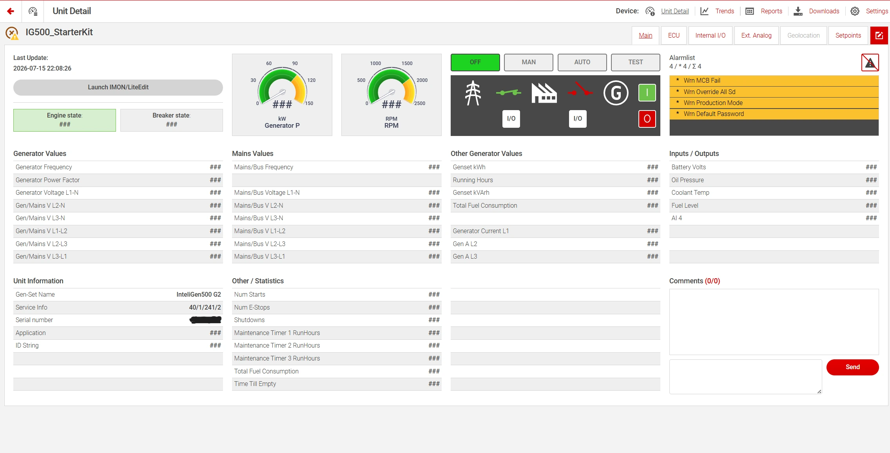

CHP / MICROGRID · SYSTEMS INTEGRATION · VALIDATION
I turn complex energy hardware into working systems.
I integrate engines, generators, inverters, batteries, controls, instrumentation, thermal systems, and test infrastructure—and carry the work from prototype through validation and field support.
CHP SystemsPower ElectronicsDAQControlsValidation






MOTORSPORT · VEHICLE SYSTEMS · EMBEDDED CONTROLS
I design, build, instrument, and validate the whole system.
My C7 is a real development platform: mechanical design and fabrication, CAN/embedded controls, custom electronics, sensing and data, then track testing to close the engineering loop.
BUILD→CONTROL→MEASURE→VALIDATE
CHP / MicroGrid Engineering
Systems work backed by physical evidence.
The work spans product integration, power electronics, instrumentation, automated testing, connected controls, and field engineering.
01 · SYSTEM INTEGRATION
E8kW Micro-CHP Platform
Engine-generator, heat recovery, inverter/battery, controls, and residential operating strategy brought together as one product system.
02 · FIELD / PRODUCT ENGINEERING
E200 CHP Program
Controller integration, commissioning, software updates, remote connectivity, troubleshooting, and supervisory-control development.

03 · POWER ELECTRONICS
Hybrid Inverter & BESS Validation
Real AC/DC test setups for transfer behavior, charging, bypass, waveform quality, ripple, and system-level power paths.
04 · INSTRUMENTATION / DAQ
DAQ & Custom Signal Conditioning
Dewesoft-based measurement workflows plus custom signal-conditioning hardware to turn prototypes into measurable engineering systems.

05 · TEST AUTOMATION
HEMS & Residential Load Emulator
Repeatable electrical and thermal test infrastructure using controls, sensors, custom hardware, and automated load profiles.

06 · CONNECTED CONTROLS
ComAp & Fleet Monitoring
Controller connectivity, remote monitoring, field workflows, API/value investigation, software update strategy, and service architecture.
Motorsport / Vehicle Systems Engineering
Build → Control → Measure → Validate.
The projects are organized by the engineering loop they prove—not by where the file happened to come from.
01 · BUILD
Active Aero Design & Fabrication
Rapid prototypes, carbon-composite wing construction, aluminum hardware, front aero, actuation, and full-vehicle packaging.
02 · CONTROL
Embedded Vehicle Controls & Driver HMI
Vehicle CAN signals, closed-loop actuation, safety logic, custom PCB development, and a native iOS engineering interface.

03 · MEASURE
Vehicle Instrumentation & Data Acquisition
Suspension sensing, strain/load concepts, thermal imaging, distributed ESP32 nodes, and live visualization for development decisions.
04 · VALIDATE
Track Validation & Vehicle Development
Gingerman and Grattan testing, PDR/Pi Toolbox review, aero/chassis correlation, driver feedback, trackside repair, and iteration.
CHP · DER · Systems Integration
E8kW Micro-CHP System Development
A residential CHP product only works when the mechanical, electrical, thermal, and control subsystems behave as one system.
What I worked on
- Integrated engine-generator hardware with PMG/rectification, inverter, battery, sensors, heat recovery, and thermal loads.
- Developed operating logic around electrical demand, battery SOC, thermal deadbands, hot-water demand, and residential behavior.
- Planned and executed electrical and thermal validation, then translated prototype findings into engineering actions for internal teams and suppliers.
- Worked across system packaging, controls, testing, and supplier coordination rather than a single isolated component.
Engine / GeneratorHeat RecoveryInverter / BatterySystem ControlsValidation
200 kW CHP · Controls · Field Engineering
E200 CHP Program
My E200 work sits at the intersection of controls, commissioning, connectivity, field support, validation, and product-service engineering for a 200 kW CHP platform.
What I contributed
- Supported ComAp IG1000 / IG500 controller integration, display/controller communication, configuration management, and commissioning workflows.
- Developed and supported controlled firmware/configuration update processes, including backup, package selection, post-update verification, and field execution planning.
- Worked on 4G / AirGate / WebSupervisor connectivity, remote monitoring, alerts, diagnostics, technician access, and service-oriented documentation.
- Troubleshot controller/module compatibility, CAN/Ethernet communication, remote connectivity, and post-update validation issues.
- Contributed to the software-update campaign for the first group of E200 field units and translated engineering requirements into practical field workflows.
- Developed a minimal IG500 supervisory thermal-management demo concept using simulated flow/temperature signals and an ESP32-based engine/thermal simulator to evaluate future E200 control integration.
200 kW CHPComAp IG1000 / IG500AirGate / WebSupervisor4G / EthernetCommissioningField DiagnosticsThermal Controls
Power Electronics · BESS · Validation
Hybrid Inverter / BESS Validation
The important behavior is often at the transitions: grid bypass, backup operation, generator input, battery charging/discharging, and transfer events.
What I built and validated
- Built instrumented AC/DC bench setups for source transfer, charging, bypass, generator input, and load-response testing.
- Measured transfer timing, waveform quality, ripple, efficiency, charging behavior, and power-path response using Dewesoft and electrical instrumentation.
- Turned test data into practical architecture recommendations for generator, inverter, battery, and control integration.
DewesoftATS / TransferAC / DC MeasurementBESS
Instrumentation · DAQ · Signal Conditioning
Data Acquisition & Custom Measurement Hardware
Good debugging starts by making the system observable. I use DAQ hardware and purpose-built signal interfaces to turn electrical and system behavior into data that can drive decisions.
How I measure and debug
- Built Dewesoft-based measurement workflows for electrical, power-system, and system-level validation work.
- Designed and assembled custom signal-conditioning / amplifier hardware when measurement signals needed practical interfacing before acquisition.
- Used synchronized waveforms and measured behavior to investigate transitions, compare configurations, verify changes, and support system-integration decisions.
- Treat instrumentation as part of the engineering system—not as an afterthought added only when something fails.
DewesoftSignal ConditioningCustom Test HardwareSynchronized MeasurementData-Driven Debug
Controls · Test Infrastructure · HEMS
Residential Load Emulator / Automated System Test
Repeatable electrical and thermal loads let system changes be compared instead of re-created manually every test.
What I built
- Developed electrical and thermal load-emulation hardware for system-level generator, inverter, battery, controls, and hot-water testing.
- Integrated PLC/Modbus, Arduino/ESP32-class controls, sensors, motorized loads, and custom electronics.
- Automated repeatable scenarios with practical limits, interlocks, and instrumentation for test-cell use.
PLC / ModbusESP32 / ArduinoCustom PCBThermal + Electrical Loads
Controller Integration · Fleet Support · Connectivity
ComAp / WebSupervisor / CHP Fleet Management
Once units leave the lab, controller access, remote visibility, software updates, cellular connectivity, and technician workflow become part of product engineering.
What I implemented and supported
- Worked with IG500/IG1000-class controller environments, 4G connectivity, commissioning tools, and WebSupervisor remote monitoring.
- Defined access, field-service, software-update, and troubleshooting workflows for engineering and technicians.
- Investigated controller/API value availability and created field-usable documentation around deployment and operations.
ComApWebSupervisor4G / Remote AccessAPI / Data
CHP / MicroGrid Evidence Dock
Fast visual scan of the work.
Public-safe system hardware, test equipment, controls, and validation evidence. Hover over any preview for a larger view.
01 · BUILD · Mechanical Design · Fabrication
C7 Active Aero Design & Fabrication
The visual story follows the hardware itself: prototype, composite structure, final metal hardware, movable front aero, actuation, and installation on the car.
What I designed and built
- Used 3D-printed prototypes to validate rear-wing geometry, brackets, mounting, and vehicle packaging before final hardware.
- Fabricated carbon-composite wing structures and transitioned prototype brackets/posts to aluminum hardware, including waterjet-cut parts.
- Developed movable front-aero ramp states for high-downforce versus low-drag operation and validated motion both disassembled and on the car.
- Integrated actuation and feedback so front/rear aero can be commanded and tested as a complete vehicle system.
CAD / Packaging3D PrintingCarbon CompositeAluminum HardwareActuation
02 · CONTROL · Embedded Systems · Driver HMI
CAN / ESP32 Active-Aero Controller & iOS HMI
The aero system reacts to vehicle state and driver intent instead of acting like isolated motors.
What I developed
- Built ESP32 + MCP2515 CAN integration and decoded throttle, brake, wheel-speed, and steering-wheel inputs.
- Implemented closed-loop actuation, filtered position feedback, deadband logic, watchdog behavior, STOP priority, automatic/manual modes, and override behavior.
- Moved prototype electronics toward a purpose-built PCB and integrated a native iOS HMI for mode control, positioning, feedback, and engineering/debug views.
- Validated control through on-car phone operation and physical/remote-command testing.
ESP32MCP2515CANClosed-loop ActuationPCBNative iOS HMI
03 · MEASURE · Instrumentation · Data Acquisition
Vehicle Instrumentation & Thermal Sensing
Better vehicle-development decisions start with better observability: suspension motion, tire thermal behavior, loads, aero state, and synchronized driver/system information.
Current development
- Developing suspension-travel and wheel-side sensing concepts for setup and aero-correlation work.
- Exploring strain-gauge / HX711 load measurement for structural and suspension-related force measurement.
- Developing tire thermal imaging using distributed ESP32 sensor nodes and live camera/thermal feeds.
- Building iOS and web visualization paths so instrumentation is usable during development instead of remaining raw logged data.
Suspension SensingStrain / HX711Thermal ImagingESP32 NodesiOS / Web Visualization
04 · VALIDATE · Track Data · Correlation
Track Validation & Vehicle Development
Aero and controls only matter if the complete car behaves better at speed. Track use closes the loop between design, data, driver feedback, and the next hardware revision.
How I validate and iterate
- Run the C7 at Gingerman and Grattan and review PDR/Pi Toolbox data after sessions rather than relying only on subjective feel.
- Use suspension-travel behavior and observed front travel limits to reason about aero balance, ride-height sensitivity, and high-speed understeer.
- Compare straight-line behavior and aero states to check drag-reduction decisions and hardware/control behavior.
- Perform trackside troubleshooting, brake/service work, setup checks, and hardware iteration as part of the development loop.
GingermanGrattanPDR / Pi ToolboxSuspension TravelAero BalanceTrackside Development
Track Video
See the development platform being used.
Real track use is the final proof point: hardware, controls, setup, data, and driver feedback all meet here.
On-track development video 02
Motorsport Evidence Dock
The full development record.
The case studies above use the strongest evidence for the engineering story. The dock keeps the broader build, controls, testing, and track record available without overwhelming the main narrative.
Build · active aero · fabrication
Prototype failures, composite work, fit checks, front aero, final hardware, and fabrication.
Control · PCB · HMI
Controller design, board development, driver interface, and actuation testing.
Validate · track development
Gingerman, Grattan, trackside work, service, and on-track validation.
Measure · instrumentation · thermal imaging
Camera integration, tire-thermal development, and distributed sensing.